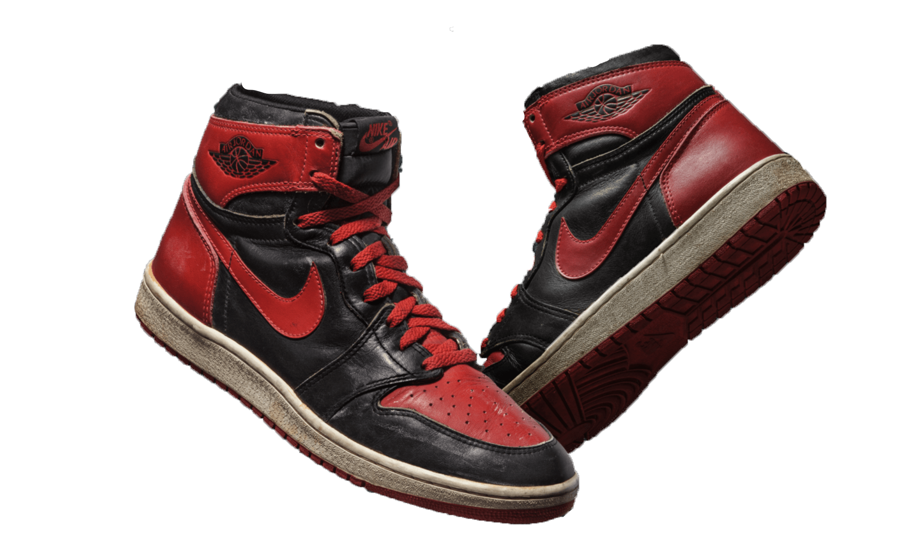
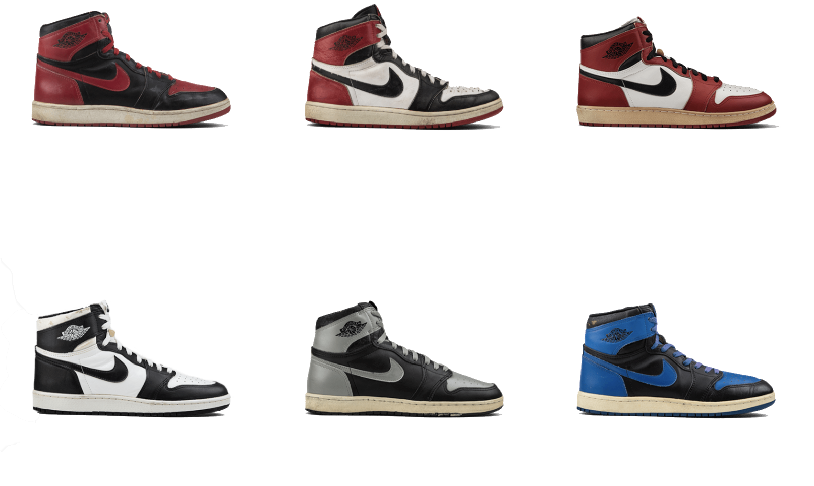
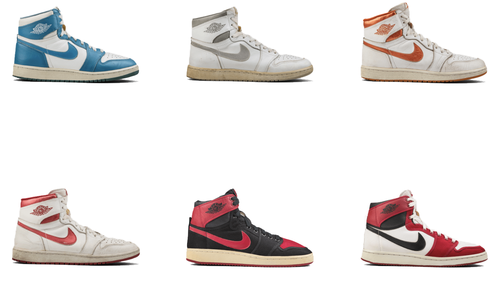
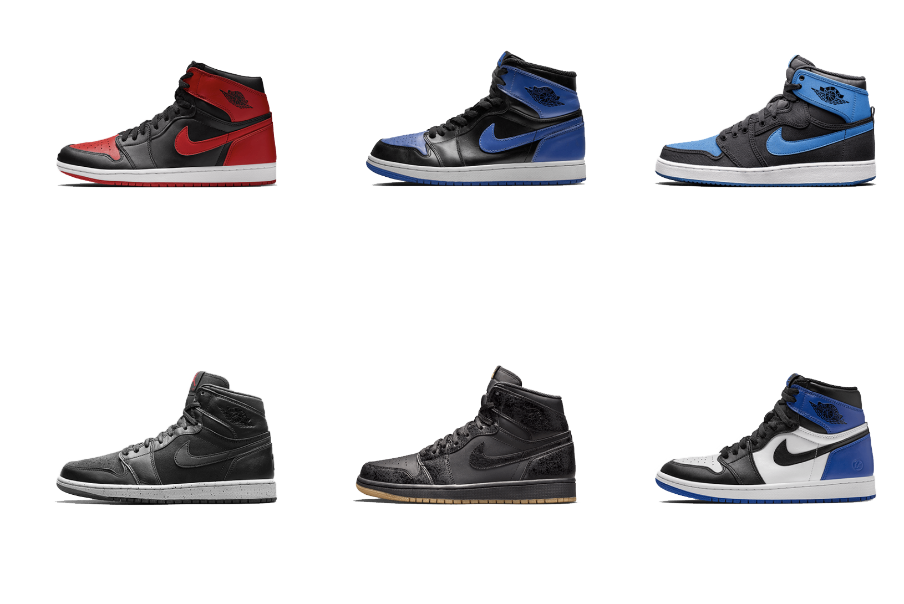
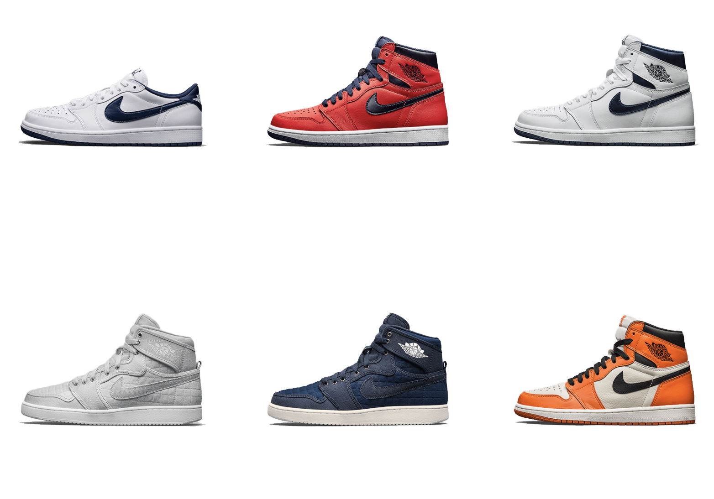

It could be said that Michael Jordan was the genesis of basketball as we know it today. Throughout a fiery and storied career, the tireless MJ overcame his hurdles, soaring above challenge after challenge to realize the unexpected. Along the way, he redefined basketball's relationship to style, the sport’s connection to youth counter-culture and the game’s creative potential.Like Jordan himself, his eponymous footwear arrived with a bang, sharing its namesake’s tradition-breaking bravado. A black and red colorway violated the league’s uniform policy, earning a stern letter from league officials and generating a $5,000 fine each time the player wore the shoes on court. It is with this brazen charisma that the Air Jordan lineage was born.




